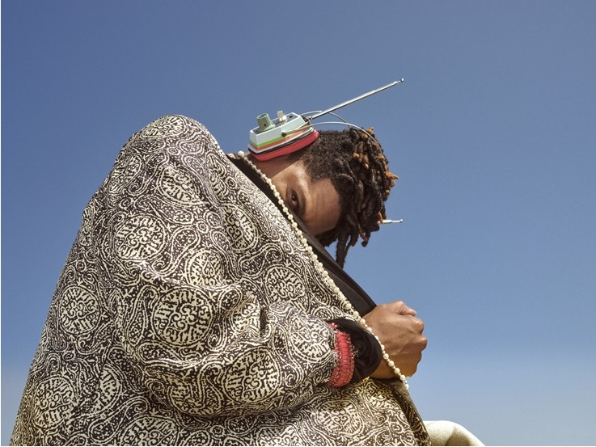
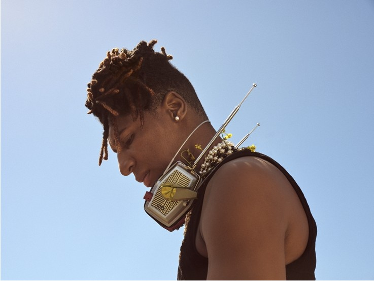
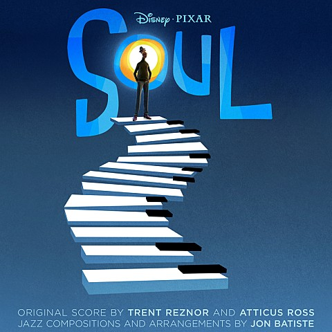
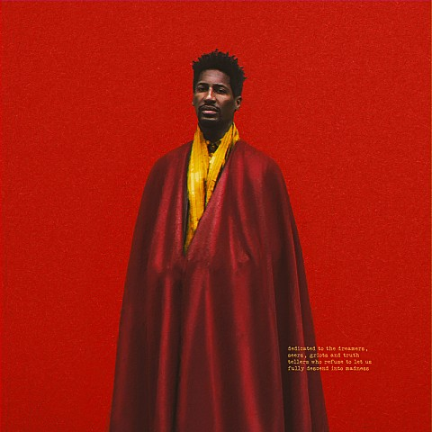

아, 아 여러분 내 음악이 들리시나요?
찬사를 받는 것은 물론 기쁜 일입니다만, 창작자는 언제나 그다음을 생각해야만 합니다.
과거의 영광을 뒤로하고 올해 8월 18일에 내놓은 새 앨범의 제목은 [World Music Radio].
Jon Batiste는 작년의 영광을 축하해 줄 친구를 잔뜩 초대해 앨범 이곳저곳에 자리를 마련해주었습니다.
Jon Batiste는 분명 이 앨범의 호스트이지만 무턱대고 음악의 주인 행세를 하지 않습니다.
더 쉽게 말하자면, 그는 이번 앨범의 일일 DJ가 되어 친구들과 함께하려 합니다.
여기서 이번 앨범에 참여한 아티스트의 면면을 살펴보시죠.
Lil Wayne(릴 웨인)과 Lana Del Rey(라나 델 레이), 그리고 Kenny G(케니 지)와 NewJeans(뉴진스)까지.
어떤 음악이 펼쳐질지 상상조차 할 수 없는 라인업이지 않나요?
앨범은 묘하게 우주적이면서도 70-80년대의 분위기가 감도는 첫 곡 'Hello, Billy Bob'과 함께 시작합니다.
흥겨운 분위기의 'Raindance' 뒤로 이어지는 'Be Who You Are'에서는 JID, Camilo(카밀로),
그리고 NewJeans가 함께 만들어 내는 라틴 스타일의 청량감이 가득합니다.
충만하다 못해 폭발적인 음악적 아이디어는 앞으로도 쉴 새 없이 라디오를 울려댈 것입니다.
가사의 반복으로 몽환적인 분위기를 만들어 낸 뒤 갑작스러운 비트로 분위기를 바꿔버리는
'Worship', Rita Payés(리타 파예스)의 나른한 목소리가 휴식을 주는 'My Heart'를 지나
어디에서나 환영받을만한 'Drink Water'와 'Calling Your Name'이 이어집니다.
Jon Batiste의 이번 앨범 [World Music Radio]는 신기한 앨범입니다.
앨범 전체를 한달음에 듣고 있다가 문득 이런 생각이 떠오르더군요.
언제 도착할지도 모르는 먼 곳으로 향해야 할 때, 이 앨범을 듣고 있으면 어떻게든 힘을 낼 수 있겠다고요.
물론 아직 여정은 끝나지 않았습니다.
다음 곡인 'Clair de Lune'에서는 이 앨범에 등장하리라고는 믿기지 않는 인물인 Kenny G가 등장합니다.
대중적인 악기인 색소폰을 상징하는 음악가임과 동시에 골수 재즈 팬들의 무시,
혹은 원성을 듣고 있는 그이지만 스포트라이트를 때려 박은 곳에서
연주하는 듯한 독보적인 스타일은 여전히 변함이 없네요.
Kenny G의 색소폰 연주에서 바로 이어지는 'Butterfly'는 과거 유행하던
슬로우 넘버가 거부할 수 없는 감동을 불러일으킵니다.

[World Music Radio]는 앞을 알 수 없는 앨범입니다.
앨범은 앞서 보여주었던 부드러움을 덜어낸 뒤 조금씩 다른 분위기를 주변에 퍼트립니다.
아주 짧은 전주에 이어 바로 시작하는 'Uneasy'에서는 아찔한 팔세토와 릴 웨인의 랩이 그사이를 파고들고,
피아노 아웃트로에 이어지는 'CALL NOW (504-305-8269)'와 간주에 해당하는
'Chassol'과 'BOOM FOR REAL'에서는 앞서 만들어 냈던 도회적인 분위기를 그대로 이어갑니다.
여기까지 왔는데 피아노 이야기를 안 할 수가 없겠네요.
피아노는 이번 앨범 [World Music Radio]에서 가장 중요한 역할을 하는 악기입니다.
중간중간 삽입된 피아노 음색이 아주 적절한 분위기를 만들어 주고 있음을 알리는
'MOVEMENT 18' (Heroes)'가 여기 피아노가 있음을 라디오 애청자들에게 각인시키고 있네요.
이번 음반은 Jon Batiste라는 아티스트가 소화할 수 있는 최대한의,
어쩌면 그 이상의 음악이 담긴 앨범이기도 합니다.
이 말을 하자마자 시작되는 'Master Power'에서는 청자를 갑자기 컨트리의 세계로 끌고 가는군요.
이렇게 할 수 있는 힘은 물론 Jon Batiste라는 음악가의 노력에서도 비롯되었지만,
이 비범한 아티스트에게 힘이 되어준 여러 아티스트의 도움 또한 적지 않았습니다.
Leigh-Anne(리-앤)의 목소리가 깊이를 불어넣는 'Running Away'처럼요.
이제 앨범은 'Goodbye, Billy Bob'과 'White Space'와 함께 서서히 작별을 준비합니다.
텅 빈듯한 사운드에 담긴 아쉬움을 뒤로하고 등장하는 'Wherever You Are'가
불꽃놀이의 마지막 순간처럼 아련한 순간을 만들어 냅니다.

방송의 종료를 알리는 오르골 소리가 적적하다고 느껴질 때,
앨범의 진정한 마지막 곡이 시작됩니다.
Lana Del Rey와 Jon Batiste와 함께하는 'Life Lesson'.
차분한 피아노 소리에 화음을 맞춘 두 사람의 목소리가 서서히 사라져 갈 때,
우리는 이제야 정말로 원하던 곳에 다다른 느낌을 받습니다.
Jon Batiste의 트랙리스트
 play_arrow
play_arrow
1
Be Who You Are
Jon Batiste
World Music Radio
3:34
 play_arrow
play_arrow
2
It's Alright
Jon Batiste
Social Music
2:55
more_horiz
play_arrow
3
Calling Your Name
Jon Batiste
World Music Radio
4:28
more_horiz
 play_arrow
play_arrow
4
Green Hill Zone
Jon Batiste
Hollywood Africans
2:54
more_horiz

play_arrow
5
Let Your Soul Glow
Jon Batiste
Soul
0:22
more_horiz

play_arrow
6
FREEDOM
Jon Batiste
We Are
2:27
more_horiz
play_arrow
7
I Need You
Jon Batiste
We Are
2:40
more_horiz
play_arrow
8
What A Wonderful World
Jon Batiste
Hollywood Africans
2:59
more_horiz
play_arrow
9
We Are
Jon Batiste
We Are
4:03
more_horiz
play_arrow
10
Don’t Stop
Jon Batiste
Hollywood Africans
3:03
more_horiz